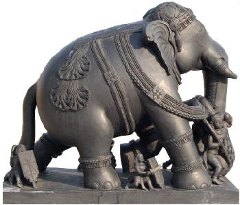

Who are we?
The word ‘Gudi’ means temple in Kannada and ‘Gudigar’ means temple artisans or craftsmen. The Gudigars earlier were employed by the kings of Karnataka dynasties in the coastal regions and Goa. After the Portugese invaded Goa, the Gudigars moved down to the Malenaad regions of Karnataka (Shimoga, Sagara and the Canara Coast). Gudigars are versatile craftsmen. They carve, paint, sculpt and mould earth to prepare idols. They also make sandalwood garlands, garlands made from bamboo, trinkets and decorative artifacts needed for wedding purposes. Earlier many well – off Gudigars owned land and were into farming/agriculture. Later some excelled in Sandalwood carving, ebony and ivory carving.
With decreasing of Sandalwood growth and diminishing forest wealth, Gudigars looked forward to wood carving. Ivory carving is totally banned in India, because of the harm caused to the elephant tusks, due to these most ancient and precious art of ivory carving came to an end.
Sandalwood supply is also greatly diminished. The government is the sole owner and distributor of this rare wood species, and the Gudigars do not get the minimum supply to carry on with their trade. Therefore, wood carving is the Gudigar’s trait now. Wall plates of gods, goddesses, nameplates, scenic carvings are created as decorative pieces. Ganesha continues to be the favorite deity in sandalwood or marble, small wooden carved stools and mantaps have demand at times. The Gudigars are impromptu in preparing an idol of Trimurti, Lakshmi, Saraswati or Natraja.
The trinkets and decorative pieces are in great demand during the wedding and festival season. Jwellery boxes carved in sandalwood are in great demand.
Culture
The Gudigars claim the Kshatriya heritage and wear the sacred thread. They worship Vishwakarma, creator and other deities common to Konkani’s. Their mother tongue is Kannada, but they speak Konkani as well. Some of the gifted Gudigars like Vithal Shet and Shamba Shet are recipients of the Rashtrapati Award for the Master craftsmen. The Gitopdesha scene in sandalwood presented by Nehru to president Dwight David "Ike" Eisenhower was a creation of the Kumta-Honnavar Gudigars.